2026
2025
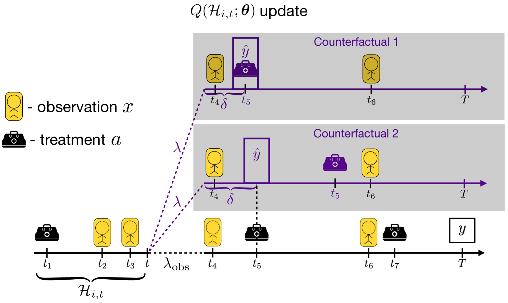
Time After Time: Scalable Effect Estimation for Interventions on When and What to Do
ICLR 2025
2024
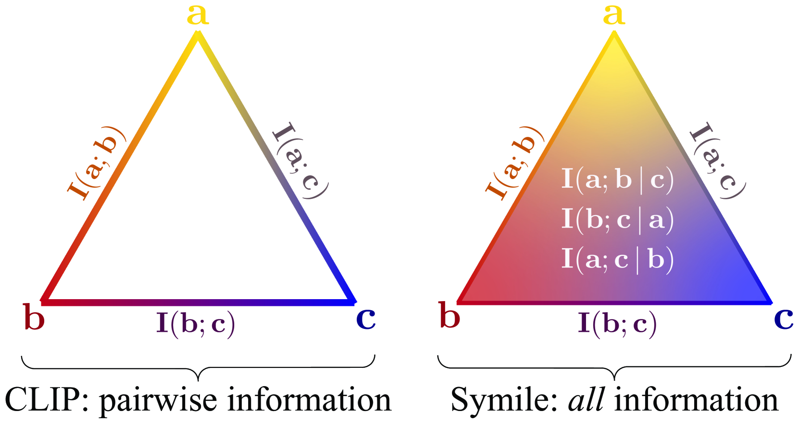
Contrasting with Symile: Simple Model-Agnostic Representation Learning for Unlimited Modalities
NeurIPS 2024

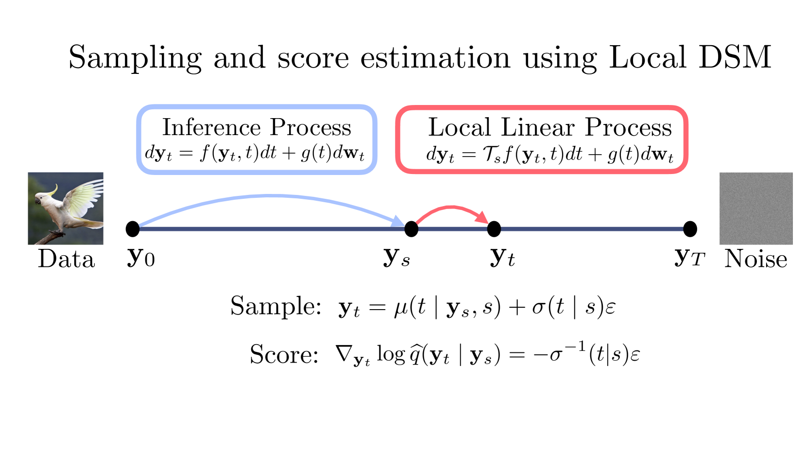
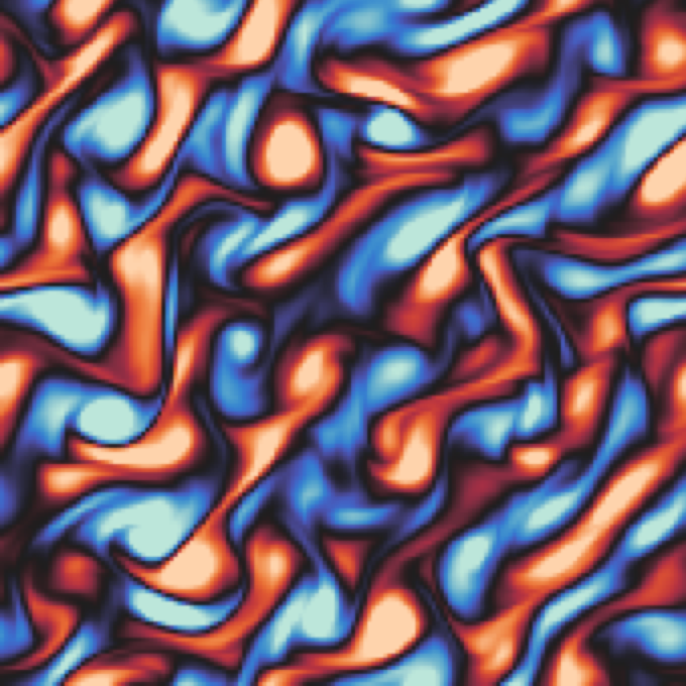
Probabilistic Forecasting with Stochastic Interpolants and Föllmer Processes
ICML 2024
Generative modeling framework for probabilistic forecasting of dynamical systems using stochastic interpolants and Föllmer processes.
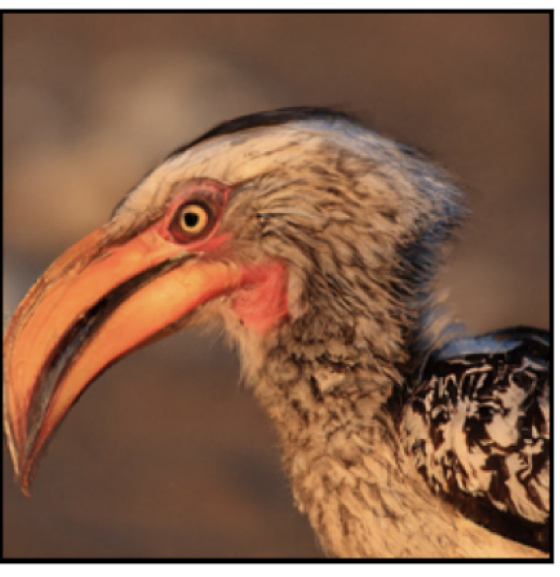
Stochastic Interpolants with Data-Dependent Couplings
ICML 2024 (Spotlight)
Extends stochastic interpolants to conditional generative modeling through learned data-dependent couplings.
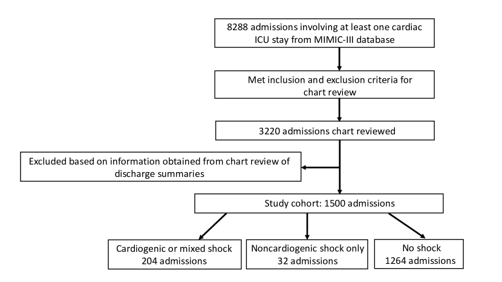
QTNet: Predicting Drug-Induced QT Prolongation with AI-Enabled Electrocardiograms
JACC: Clinical Electrophysiology, 2024
2023
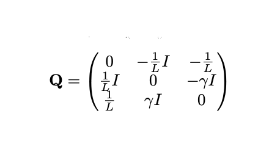
Where to Diffuse, How to Diffuse, and How to Get Back: Automated Learning for Multivariate Diffusions
ICLR 2023
2022
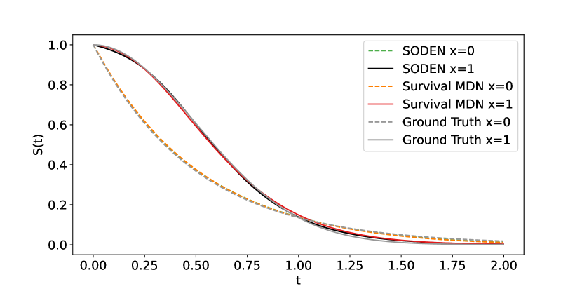
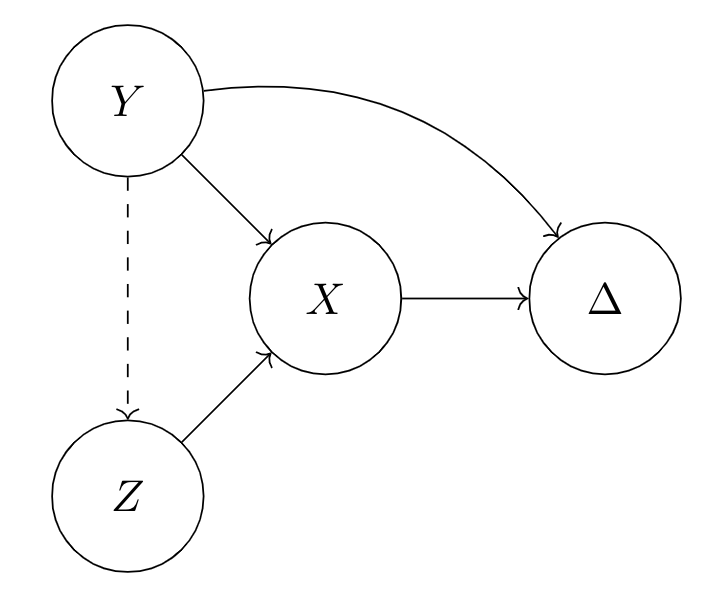
2021
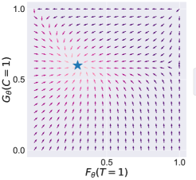
Inverse-Weighted Survival Games
NeurIPS 2021
A new way to estimate survival models by playing games involving both the failure and censoring distribution.
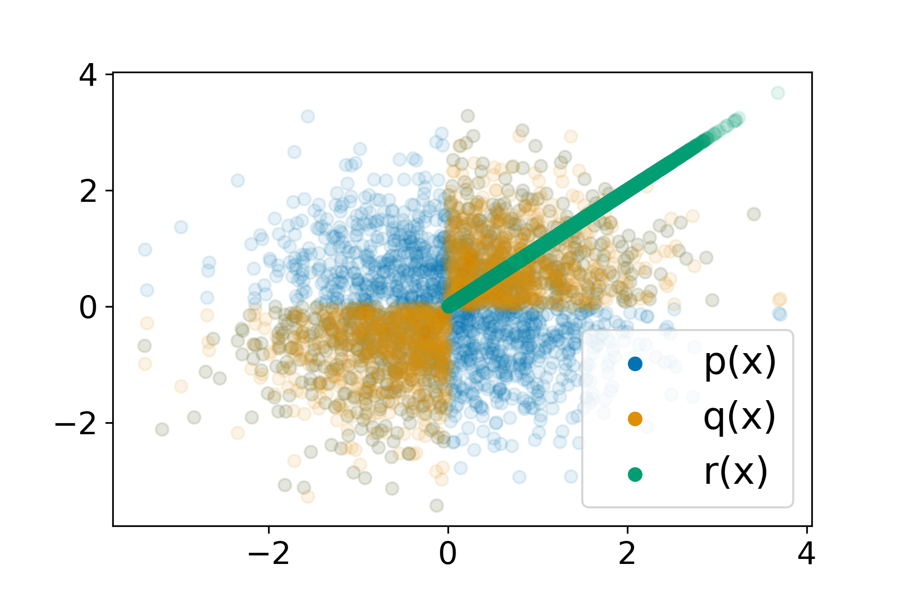
Understanding Failures in Out-of-Distribution Detection with Deep Generative Models
ICML 2021
2020
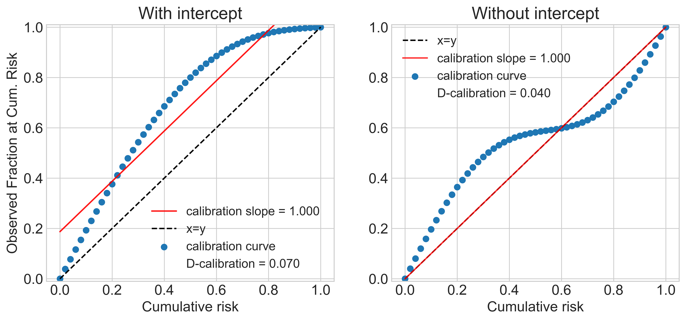